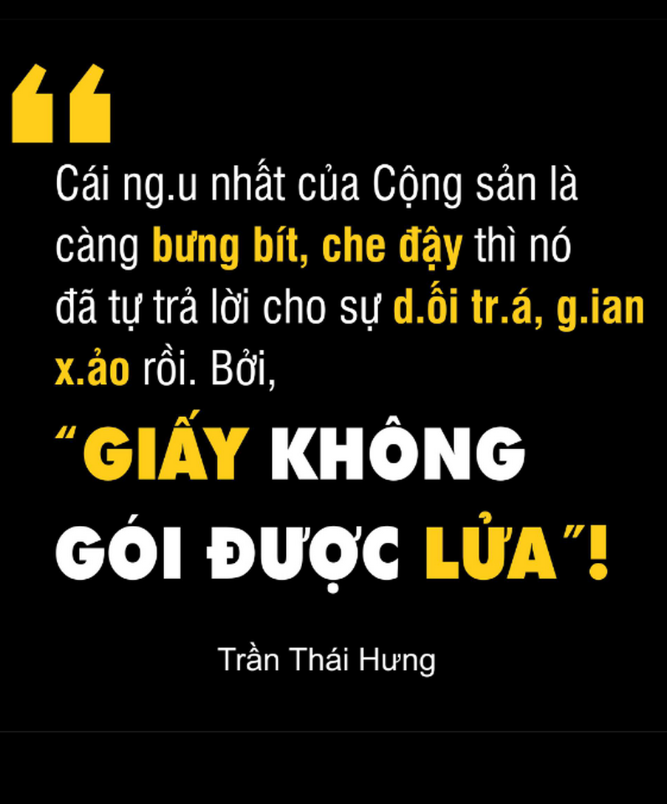
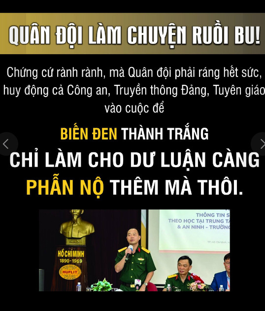
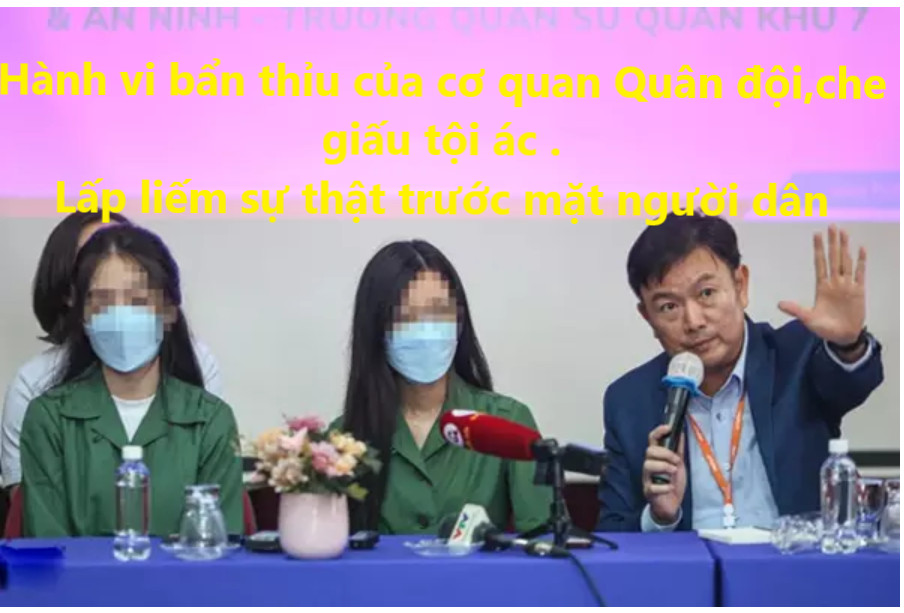
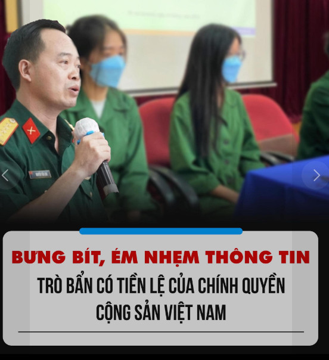

Hễ có việc gì xảy ra mà ảnh hưởng đến thanh danh của Nhà nước,Đảng Cộng sản,hay cái cơ quan nhạy cảm trọng yếu của chế độ như Công an và Quân đội thì điều đầu tiên người ta nghĩ đến không phải là minh bạch,xác thực thông tin ,càng không phải là công khai mọi chuyện,hay đứng về phía người bị hại và công lý.Cái đầu tiên người ta nghĩ đến đó là làm sao lấp liếm,che đậy sự việc để nó không lan ra.Rồi tiếp đến là huy động cánh báo chí và mạng xã hội tuyên truyền những thông tin ngược lại với những gì người bị hại nói. Sau rồi chạy chọt,huy động các cơ quan, ban ngành, đoàn thể để giải quyết sự việc một cách "êm thấm". Cuối cùng là đe doạ bất cứ ai dám mở miệng, có thể là bắt một vài người đi tù vì dám "lợi dụng các quyền tự do dân chủ".Hầu như bất cứ sự việc nào cũng làm theo công thức trên.
Người dân thấp cổ bé họng đáng nhẽ ra phải được đặt làm trọng tâm của những vụ việc như nghi án hiếp dâm ở nơi học quân sự đang diễn ra. Nhưng khốn nạn thay, ở xứ ta thì người dân luôn luôn bị coi là "thế lực thù địch".
Bởi vì việc họ kêu cứu luôn bị coi là "tuyên truyền chống nhà nước" hay "gây hoang mang trong dư luận". Bởi lời kêu cứu thống thiết của họ có thể khiến cho một cá nhân nào đó, hay một ban ngành, bộ phận nào đó của nhà nước, của Đảng bị ảnh hưởng.Thế là Đảng và Nhà nước chọn cách bịt miệng dân để giữ thể diện cho bản thân. Thay vì tìm cách thực thi công lý để nạn nhân và xã hội được an lòng.
Mới mấy hôm trước thôi người ta còn kỉ niệm ngày cụ Lê Đình Kình ở Đồng Tâm bị sát hại dã man trong chính phòng ngủ của mình. Tuy sự việc có khác, nhưng nếu để ý cách chính quyền đối phó với lời kêu cứu của cụ Kình và người dân Đồng Tâm. Thì sẽ thấy rõ là họ thực hiện y chang công thức nêu ở bên trên.
Dù có là tranh chấp đất đai, hay bị h*ãm h*iếp, bị hành hung bởi nhân viên công lực, hay bất cứ chuyện gì mà ở đó người dân phải đối đầu với nhà nước. Thì phần thua thiệt luôn luôn thuộc về người dân. Đây có phải là một xã hội mà chúng ta muốn con cái mình lớn lên ở trong đó hay không?!